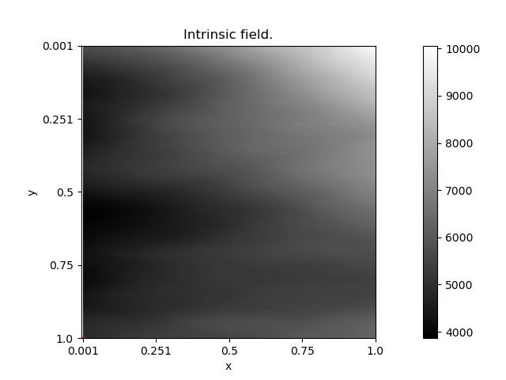
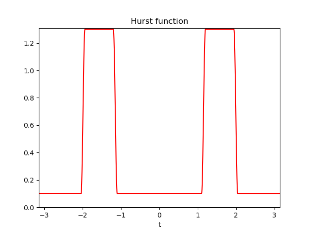

Note
Click here to download the full example code
Textured images with large trend¶
Code author: Frédéric Richard <frederic.richard_at_univ-amu.fr>
In this example, we show how to simulate textured images with large trends.
Basic AFBF have stationary increments. This is ensured by the fact that the Hurst function \(\beta\) ranges in the interval \((0,1)\). However, the package PyAFBF enables the simulation of more generic fields for which \(\beta\) have values above 1. Increments of order 0 of such fields might not be stationary anymore. They are intrinsic fields of an order k, which depends on the maximal value of the Hurst function. Such fields may show large polynomial trends, the degree of which corresponding to the order k.
Note
Even when extended to an intrinsic random field, the hurst function of an AFBF has a minimum \(H\) which remains in \((0,1)\).
See also
The definition and theory of intrinsic random fields are presented in [10]. These fields have been used for modeling in the framework of AFBF [3, 4, 5, 6, 7].
- 
- 
Out:
c:\users\frede\nextcloud\synchro\recherche\deep-texture\afbf_release\afbf\Classes\SpatialData.py:318: MatplotlibDeprecationWarning: Adding an axes using the same arguments as a previous axes currently reuses the earlier instance. In a future version, a new instance will always be created and returned. Meanwhile, this warning can be suppressed, and the future behavior ensured, by passing a unique label to each axes instance.
fig = plt.subplot()
import numpy as np
from afbf import tbfield
# Definition and simulation of an AFBF.
Z = tbfield('afbf-smooth')
Z.hurst.ChangeParameters(
np.array([[1.3, 0.1]]),
np.array([[-1.2, -1.1, 1.1, 1.2]])
)
Z.hurst.trans = 1
Z.NormalizeModel()
Z.FindOrder()
Z.DisplayParameters()
np.random.seed(1)
z = Z.Simulate()
z.name = 'Intrinsic field.'
z.Display(1)
Total running time of the script: ( 0 minutes 8.489 seconds)